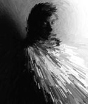

Digital image processing has come a very long way. Remember when MacPaint® was a
revolutionary concept? Now we've got a plethora of sophisticated graphics programs
available on the Macintosh for regular folks: 32-bit painting programs,
image-processing programs, CAD programs, photo-realistic rendering programs,
solid modeling programs, animation programs--you name it. The power to be your
best, or the power to run off into the weeds? I guess it depends on who's at the
keyboard. One thing is sure: art will never be the same.
I've been messing around lately with digital filtering of scanned images: taking an
existing image and applying some sort of mathematical transformation to it. The
results are sometimes funny, sometimes beautiful, often ugly, but always fun.
One of the programs I've been spending time with lets you interactively type in
mathematical expressions and apply them to an image. This application, called Pico, is
a Macintosh implementation of an image-processing language developed by Gerard J.
Holzmann at AT&T Bell Laboratories, and described in his bookBeyond Photography:
The Digital Darkroom. (The Macintosh version I've been using was written by John W.
Peterson here at Apple, and I've included it on theDeveloper CD Series disc so that you
can play with it, too.) If you're the least bit interested in image processing, you should
read Holzmann's slim, friendly book. It describes the language in detail and gives lots
of examples of its use. The book is full of fascinating photographs that have been
tweaked and transformed using the language, ranging from the hilarious (in
particular, see the Einstein caricature on page 35), to the sublimely beautiful (make
up your own mind). The overall feel is one of whimsy and fun, with a strong dose of the
joy of discovery. The book also includes a very instructive and in- depth discussion of
the software that implements the language (a lexical analyzer, a recursive-descent
parser, and an interpreter) and source code in C.
Holzmann's language allows you to invent, implement, and try out digital filters on the
fly. It uses a C-like syntax and is decidedly mathematical, but that's where a lot of the
fun comes in: seeing a photographic image quickly transformed by a simple
mathematical formula is really fascinating. The language makes it easy to mess around
and discover unusual things about math and filters: you can just type in an expression,
hit the Enter key, and see the results immediately. The program operates only on
8-bit gray-scale images that are 256 by 256 pixels, but the power of the language
far outshines this limitation. Try it, you'll like it.
There's another kind of digital filtering that I first learned about a little over a year
ago in an article by Paul Haeberli at Silicon Graphics:Paint By Numbers: Abstract
Image Representations , in the SIGGRAPH '90 Conference Proceedings. This is an
interactive kind of filtering, which makes it a lot of fun. The concept is simple: Start
with a given image, any image (call it the source). Create a new, blank one (the
destination) that's the same size. Then you "paint" on the destination with the mouse,
and at each point you touch, the color of the source image is determined at that same
location. A"brush stroke" is then drawn in the destination at that position, with the
source's color. If the brush just drew single pixels, you would be copying the source
image exactly, which would be a pretty tedious way to copy it. Ah, but the brush can do
anything it wants to, and that's where the fun begins. If the brush draws, say, a circle
a few pixels in diameter, you get a sort of "blot" effect, with the blots overlapping each
other haphazardly. Or you could draw a line in some random direction from the source
pixel's location, or add some noise to the color so that it varies a little from the source
color, or draw a clump of dots centered at the source pixel, or draw a silhouette of a
wiener dog in the appropriate color, or . . . the possibilities are endless. In a way
you're tracing the source, but the brush you use to trace with isn't exact, and the
results can be striking.
The finished images tend to look very "painterly" and are often evocative of
impressionist paintings like those of Monet or Renoir, or of the pointillist
"divisionist" technique of Seurat. (Can you tell I've been spending some time with my
handy-dandyRandom House Encyclopedia ? Thanks, Mom.) This is a refreshing move
away from the trend toward photo-realistic rendering that you see so much of in
computer graphics.
I wrote a Macintosh application that implements a simplified version of what Haeberli
did, so I could play around with it. (The application and all the source code are on this
month's CD, for you to mess around with. If you find any problems, please let me
know.) The most fun part turned out to be writing the brush routines, and I was
curious to see just how hard it is to incorporate plug-ins into an application, so I made
up a simple plug-in interface for the brushes (plug-ins are code resources separate
from the application that are loaded and run as needed). Surprisingly, it turned out to
be pretty trivial to implement plug-ins. I figured I was going to be forced to descend to
the level of A5 worlds and code resource headers, but with the exception of one subtle
gotcha it was easy. Basically you just get a handle to the code resource with
GetResource, lock it, dereference it, and call it. I had to do some ugly casting to
convince the C compiler to let me make the call, but other than that there were almost
no problems.
One thing turned up that I couldn't figure out, and I was forced to seek help. I was
writing a filter routine (the application supports both brushes and filters as
plug-ins) that was a modified version of the RedGreenInvert routine from the article
"Drawing in GWorlds for Speed and Versatility" in this issue. I first tried it linked
into my application, so I could use the source debugger on it. Once it was working, I
converted it to a plug-in and BOOM, it crashed with a bus error. Some investigative
work pointed to SwapMMUMode as the culprit, but I couldn't figure out why. (Trumpet
fanfare) Bo3b Johnson to the rescue once again! It turns out that since I was calling
the plug-in in 24-bit mode, when it came time to call SwapMMUMode the PC contained
an address that had some of its high bits set (in this case the "locked" bit since I had
locked the handle and the "resource" bit since it was a handle to a code resource). This
is a bad thing. The solution, of course, is to call StripAddress on the pointer to the
plug-in before calling it. That way the address in the PC is clean and SwapMMUMode is
happy.
There are several commercially available applications that do Haeberli-like image
manipulation. Monet, by Delta Tao Software, is a much more complete and
sophisticated implementation of Haeberli's concepts, incorporating some of the cooler
features like opacity control, getting the direction of the brush strokes from the
movement of the mouse, and so on. (You gotta love Delta Tao Software: when a customer
asks for an IBM version of one of their products, they gleefully answer "Buy a
Macintosh.") There's also Painter, a truly unique and remarkable paint program from
Fractal Design that simulates very naturally the media artists use--chalk, pencil,
charcoal, and so on. It has a "cloning" function that's similar to Haeberli's in concept:
you can manually or automatically draw over the "source" image with any of the
brushes. Aldus Gallery Effects by Silicon Beach Software is a product that basically
consists of canned filters that can be applied to images to transform them in
interesting ways, many of which are similar to the effects you get with Haeberli's
technique. And then of course there's Adobe Photoshop, the brilliant, precocious
teenager of image- processing programs.
Photoshop seems to have become the de facto industry standard image-processing
program. Its versatility is, so far, unmatched by any other program I've seen. And its
plug-in interface has also become something of a standard: many Macintosh graphics
programs (Painter, for one) now support Photoshop plug-ins, and I know of at least
one software company that does nothingbut writePhotoshop plug-ins. I think plug-ins
are a very cool thing: they allow extension and customization of an application on the
fly, bringing us a tiny step closer to the dream of "erector set" applications that can be
taken apart, rearranged, and rebuilt by users to suit their needs. If you want to write
some Photoshop plug-ins, you can find the documentation for the plug-in interface
(along with examples in MPW C, MPW Pascal, and THINK C) on the CD.
Here's the big, deep question about these digitally transformed images: Are They Art?
An image produced by any of these applications can indeed be "arty"; of that there is no
doubt. But is it really art? Many graphic artists would immediately answer with a
resounding "NO!" They'd say that it just looks like art, that it imitates art (kinda like
life), but isn't really art because it'sautomatic . But many painters in the surrealist
and abstract impressionist movements took great interest in what they termed
"automatic" painting, painting without the intervention of conscious control. Jackson
Pollock was a notable practitioner of this technique. Is the creation of a painting by
automatic means any different, in principle, from what these computer-based tools
do?
"Wait a minute!" these artists might cry, "Pollock began with a blank canvas! What he
did was truly original! You (smug smirk) are just taking an existing image and
transforming it with a computer. That's not art, that's just (expression of extreme
distaste)filtering ."
"Wipe that smug smirk off your face," I might smirk smugly, "what about the
dadaists? They claimed that art was anything that anyone decided tocall art, and I'm
calling these images art." (Fun dadaist tales: Marcel Duchamp, a dadaist in New York,
bought a urinal, signed it "R. Mutt," and called it art. He claimed that the signature
alone made any manufactured item into a work of art. These "readymades," as he called
them, sold quite well. And then there's Kurt Schwitters, a Hanover dadaist, who made
collages from rubbish. Now the dadaist movement, admittedly, was intended to upset
the status quo, rip apart the definition of art, and shock people out of their bourgeois
sensibilities, but their influence is still strongly felt in modern art, and has forever
muddied the definition of what art is. For that I heartily thank them.)
There's another eminently pragmatic definition of art: it's art if someone is willing to
buy it. This one is distasteful in its materialistic slant, but I must admit that it's a
useful one, at least to people who make a living making art. Then there's the Marshall
McLuhan stance that "art is anything you can get away with." I personally love this one
for its nebulousness, and I'm willing to leave it at that.
Whatever definition we pick, we still can't conclusively say whether these
computer-transformed images are art. Art is just too slippery a thing to pin down,
like trying to put a cloud in a chair. I think art is primarily a dialog between the
creator and the experiencer: if something is communicated, I'll call it art. But in the
final analysis, does it really matter? These tools are just another kind of computer
fun, andeveryone , artist or not, can play.
DAVE JOHNSON would like to share with you a quote from The Three-Pound Universe
by Judith Hooper and Dick Teresi, a wonderful book about the human brain: "Research
at Yale University's Center for Behavioral Medicine turned up the surprising fact that
regular 'reading therapy'--that is, reading a book for half an hour a day--is
neurophysiologically equivalent to the practice of TM. (Whether this means the
Maharishi's mantras are comparable to Heidi or merely reflects the crudeness of our
measuring devices, we'll let you decide.)" This finding vindicates Dave's habits in a
way no heartfelt argument ever could. *
Dave welcomes feedback on his musings. He can be reached at JOHNSON.DK on
AppleLink, dkj@apple.com on the Internet, or 75300,715 on CompuServe. *